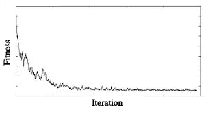

Simulated Annealing
Simulated annealing is a very popular technique for global optimization. The method was adapted from the Metropolis-Hastings algorithm. The inspiration for the algorithm was the process of annealing in materials science, whereby materials and heated and cooled in a controlled way in order to reduce defects.
In simulated annealing, we start out with a an initial sate and then keep iterating, making small changes to the state each time. If the changes improve the objective function, then they are always accepted. If not, then we may still accept them with some probability. Typically, this process is repeated until a stopping condition is met.
The acceptance probability function P(e,e',T) (where e and e' are the old and new energies respectively and T is the temperature) is usually defined as 1 if e' < e and exp(-(e'-e)/T) otherwise.
An important aspect of simulated annealing is the changing temperature, T, which is used for the acceptance probability function described above. Typically, the temperature of the system is set to decrease gradually as the number of iterations increases. As a result, as the algorithm proceeds, it becomes progressively less likely that solutions with worse fitnesses will be accepted, which leads the algorithm to converge towards a local minima/maxima (which we hope is close to the global minima/maxima). The figure below shows a typical run for simulated annealing (on a minimization problem), with the iteration count on the X axis and the fitness on the Y axis:
As you can see, the algorithm makes bigger jumps towards the beginning when the temperature is high and it will tend to only allow small jumps in the later phases as the temperature decreases.
Below is pseudocode for simulated annealing:
$ // Return a state that is an approximation of the global maximum
$ function simulated annealing(initial_state, init_temperature):
$ best_state ← initial_state
$ current_state ← initial_state
$ current_fitness ← fitness(current_state)
$ temperature ← init_temperature
$ loop do
$ Set n based on temperature
$ proposal_state ← make_n_changes(current_state,n)
$ proposal_fitness ← fitness(proposal_state)
$ // If the new state is better than the current state, accept it
$ If proposal_fitness > current_fitness:
$ current_state ← proposal_state
$ If proposal_fitness > fitness(best_state):
$ best_state ← proposal_state
$ // If the new state is not better than the current state,
$ // still accept with some probability
$ ElseIf P(current_fitness, proposal_fitness, temperature) > random()):
$ current_state ← proposal_state
$ temperature ← Update(temperature)
$ Check stopping condition. If met, return best_state
Since at any stage, the simulated annealing algorithm only makes changes to a state, rather than searching and storing all of its neighbors, it is generally a very memory efficient algorithm (it only needs to keep track of the current state, the proposed next state and the best state reached so far).
The finch implementation of simulated annealing has the following signature:
simulated_annealing(initial_solution []int, evaluate func([]int) float64,
make_change func([]int) []int, init_temp float64, thermostat float64,
itol int, reannealing int)
The function takes in the following parameters:
- initial_solution - An int[] array with an initial solution to seed the algorithm with
- evaluate - A function that you must construct and pass in which takes a solution of type int[] as a parameter and returns a fitness score for the given solution of type float64
- make_change - A function that takes in a solution of type int[] and makes one change to it, returning a new solution of type int[]
- init_temp - The starting temperature for the algorithm
- thermostat - A number, generally between 0.85 and 0.99 that indicates how much the temperature should be adjusted when changes are made to the temperature
- itol - The maximum iterations to do before stopping
- reannealing - The number of accepted solutions before a temperature adjustement is made
The function returns two values:
- The state at the local maximum (type []int)
- The fitness score at the local maximum (type float64)